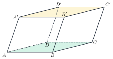
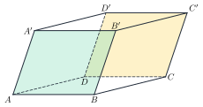
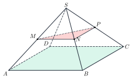
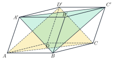
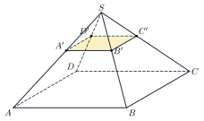

Parallel PlanesHai mặt phẳng song song
Grade 11 · Topic: Parallelism in SpaceLớp 11 · Chủ đề: Quan hệ song song trong không gian
1Lesson IntroductionGiới thiệu bài học
Learning goalsMục tiêu bài học
By the end of this lesson you can:
Sau bài học này, em có thể:
recognise parallel planes and prove that two planes are parallel;
nhận biết hai mặt phẳng song song và chứng minh hai mặt phẳng song song;
use the properties of parallel planes to find lines of intersection;
dùng tính chất của hai mặt phẳng song song để tìm giao tuyến;
apply Thales' theorem in space;
vận dụng định lí Thalès trong không gian;
describe prisms, parallelepipeds and frustums and compute with them.
mô tả hình lăng trụ, hình hộp, hình chóp cụt và tính toán trên các hình đó.
2Mathematical VocabularyTừ vựng Toán học
parallel planes – two planes with no common point; \((P)\parallel(Q)\).
hai mặt phẳng song song – hai mặt phẳng không có điểm chung; \((P)\parallel(Q)\).
prism – a solid with two equal parallel bases and lateral faces that are parallelograms.
hình lăng trụ – hình có hai đáy là hai đa giác bằng nhau nằm trên hai mặt phẳng song song, các mặt bên là hình bình hành.
lateral edge – an edge that joins the two bases; in a prism all lateral edges are parallel and equal.
cạnh bên – cạnh nối hai đáy; trong hình lăng trụ các cạnh bên song song và bằng nhau.
parallelepiped – a prism whose base is a parallelogram; all six faces are parallelograms.
hình hộp – hình lăng trụ có đáy là hình bình hành; cả sáu mặt đều là hình bình hành.
frustum (truncated pyramid) – the part of a pyramid between the base and a plane parallel to the base.
hình chóp cụt – phần của hình chóp nằm giữa đáy và một mặt phẳng song song với đáy.
Thales' theorem in space – three parallel planes cut any two lines in proportional segments.
định lí Thalès trong không gian – ba mặt phẳng song song chắn trên hai cát tuyến bất kì những đoạn thẳng tương ứng tỉ lệ.
3Useful English PhrasesCụm từ tiếng Anh thường gặp
Prove that the two planes are parallel.
Chứng minh hai mặt phẳng song song.
The plane cuts the two parallel planes along parallel lines.
Mặt phẳng cắt hai mặt phẳng song song theo hai giao tuyến song song.
Find the length of the segment by Thales' theorem.
Tính độ dài đoạn thẳng bằng định lí Thalès.
The lateral edges of the prism are parallel and equal.
Các cạnh bên của hình lăng trụ song song và bằng nhau.
How many faces does the prism have?
Hình lăng trụ có bao nhiêu mặt?
4Prerequisite ReviewÔn tập kiến thức nền
From Bài 12: \(a\not\subset(P)\), \(a\parallel b\subset(P)\Rightarrow a\parallel(P)\); if \(a\parallel(P)\) and a plane through \(a\) cuts \((P)\) along \(b\), then \(b\parallel a\). Thales in a triangle: \(MN\parallel BC\iff\dfrac{AM}{AB}=\dfrac{AN}{AC}\).
Từ Bài 12: \(a\not\subset(P)\), \(a\parallel b\subset(P)\Rightarrow a\parallel(P)\); nếu \(a\parallel(P)\) và mặt phẳng chứa \(a\) cắt \((P)\) theo \(b\) thì \(b\parallel a\). Thalès trong tam giác: \(MN\parallel BC\iff\dfrac{AM}{AB}=\dfrac{AN}{AC}\).
5TheoryLý thuyết
5.1 Parallel planes and the criterionHai mặt phẳng song song và điều kiện song song
DefinitionĐịnh nghĩa
Two planes are parallel when they have no common point: \((P)\parallel(Q)\). Then every line of \((P)\) is parallel to \((Q)\).
Hai mặt phẳng gọi là song song nếu chúng không có điểm chung: \((P)\parallel(Q)\). Khi đó mọi đường thẳng nằm trong \((P)\) đều song song với \((Q)\).
Theorem 1 (criterion)Định lí 1 (điều kiện)
Find in \((P)\) two intersecting lines, each parallel to \((Q)\) (usually each parallel to a line of \((Q)\)).
Tìm trong \((P)\) hai đường thẳng cắt nhau cùng song song với \((Q)\) (thường là mỗi đường song song với một đường thẳng của \((Q)\)).
5.2 PropertiesTính chất
TheoremsCác định lí
Through a point outside \((Q)\) there is exactly one plane parallel to \((Q)\).
Qua một điểm nằm ngoài mặt phẳng \((Q)\) có một và chỉ một mặt phẳng song song với \((Q)\).
If \((P)\parallel(Q)\) and a plane \((R)\) cuts \((P)\), then \((R)\) also cuts \((Q)\) and the two lines of intersection are parallel.
Nếu \((P)\parallel(Q)\) và mặt phẳng \((R)\) cắt \((P)\) thì \((R)\) cũng cắt \((Q)\) và hai giao tuyến song song với nhau.
Thales' theorem in space: three parallel planes cut two lines at \(A,B,C\) and \(A',B',C'\) with \(\dfrac{AB}{A'B'}=\dfrac{BC}{B'C'}=\dfrac{CA}{C'A'}\).
Định lí Thalès trong không gian: ba mặt phẳng đôi một song song chắn trên hai cát tuyến bất kì các đoạn thẳng tương ứng tỉ lệ: \(\dfrac{AB}{A'B'}=\dfrac{BC}{B'C'}=\dfrac{CA}{C'A'}\).
5.3 Prisms, parallelepipeds and frustumsHình lăng trụ, hình hộp, hình chóp cụt
FactsTính chất
Prism: two equal bases in parallel planes; lateral edges parallel and equal; lateral faces are parallelograms. An \(n\)-gonal prism has \(n+2\) faces, \(3n\) edges, \(2n\) vertices.
Hình lăng trụ: hai đáy bằng nhau nằm trên hai mặt phẳng song song; các cạnh bên song song và bằng nhau; các mặt bên là hình bình hành. Lăng trụ \(n\)-giác có \(n+2\) mặt, \(3n\) cạnh, \(2n\) đỉnh.
Parallelepiped: a prism with a parallelogram base; its 6 faces are parallelograms, opposite faces are parallel, and the 4 space diagonals meet at their common midpoint.
Hình hộp: lăng trụ có đáy là hình bình hành; 6 mặt đều là hình bình hành, hai mặt đối diện song song, 4 đường chéo cắt nhau tại trung điểm của mỗi đường.
Frustum: cut a pyramid by a plane parallel to the base. The two bases are similar polygons with parallel sides; the lateral edges, extended, meet at the apex.
Hình chóp cụt: cắt hình chóp bởi mặt phẳng song song với đáy. Hai đáy là hai đa giác đồng dạng có các cạnh tương ứng song song; các cạnh bên kéo dài đồng quy tại đỉnh hình chóp.

Watch out!Lưu ý
Two lines of \((P)\) parallel to \((Q)\) are enough only if they intersect; two parallel lines are not enough. Lines lying in two parallel planes may be skew.
Hai đường thẳng của \((P)\) song song với \((Q)\) chỉ đủ khi chúng cắt nhau; hai đường thẳng song song thì chưa đủ. Hai đường thẳng nằm trên hai mặt phẳng song song có thể chéo nhau.
6Worked ExamplesVí dụ có lời giải
ExampleVí dụ 1BasicCơ bản – Parallel faces of a boxCác mặt song song của hình hộp
In the parallelepiped \(ABCD.A'B'C'D'\), name the three pairs of parallel planes containing faces. Why is \((ABB'A')\parallel(DCC'D')\)?
Trong hình hộp \(ABCD.A'B'C'D'\), kể tên ba cặp mặt phẳng song song chứa các mặt. Vì sao \((ABB'A')\parallel(DCC'D')\)?

Analysis: Use the criterion with two intersecting lines \(AB\), \(AA'\).
Phân tích: Dùng điều kiện với hai đường thẳng cắt nhau \(AB\), \(AA'\).
\((ABCD)\parallel(A'B'C'D')\), \((ABB'A')\parallel(DCC'D')\), \((ADD'A')\parallel(BCC'B')\).
\((ABCD)\parallel(A'B'C'D')\), \((ABB'A')\parallel(DCC'D')\), \((ADD'A')\parallel(BCC'B')\).
\(AB\parallel DC\subset(DCC'D')\) and \(AA'\parallel DD'\subset(DCC'D')\); \(AB\), \(AA'\) meet at \(A\).
\(AB\parallel DC\subset(DCC'D')\) và \(AA'\parallel DD'\subset(DCC'D')\); \(AB\), \(AA'\) cắt nhau tại \(A\).
Three pairs; \((ABB'A')\parallel(DCC'D')\) by Theorem 1.
Ba cặp; \((ABB'A')\parallel(DCC'D')\) theo Định lí 1.
ExampleVí dụ 2BasicCơ bản – Midpoints in a pyramidTrung điểm trong hình chóp
\(S.ABCD\) has a parallelogram base. \(M,N,P\) are the midpoints of \(SA,SB,SC\). Prove \((MNP)\parallel(ABCD)\).
Cho hình chóp \(S.ABCD\) đáy là hình bình hành; \(M,N,P\) là trung điểm \(SA,SB,SC\). Chứng minh \((MNP)\parallel(ABCD)\).

Analysis: Two intersecting lines of \((MNP)\): \(MN\) and \(NP\).
Phân tích: Hai đường thẳng cắt nhau trong \((MNP)\): \(MN\) và \(NP\).
Midlines: \(MN\parallel AB\), \(NP\parallel BC\), so \(MN\parallel(ABCD)\), \(NP\parallel(ABCD)\).
Đường trung bình: \(MN\parallel AB\), \(NP\parallel BC\) nên \(MN\parallel(ABCD)\), \(NP\parallel(ABCD)\).
\(MN\) and \(NP\) meet at \(N\).
\(MN\) và \(NP\) cắt nhau tại \(N\).
\((MNP)\parallel(ABCD)\).
\((MNP)\parallel(ABCD)\).
ExampleVí dụ 3IntermediateTrung bình – Two diagonal planesHai mặt phẳng chéo
In the parallelepiped \(ABCD.A'B'C'D'\), prove that \((BA'C')\parallel(ACD')\).
Cho hình hộp \(ABCD.A'B'C'D'\). Chứng minh \((BA'C')\parallel(ACD')\).

Analysis: Find two intersecting lines of \((BA'C')\) parallel to lines of \((ACD')\).
Phân tích: Tìm hai đường thẳng cắt nhau của \((BA'C')\) lần lượt song song với hai đường thẳng của \((ACD')\).
\(ACC'A'\) is a parallelogram, so \(A'C'\parallel AC\).
\(ACC'A'\) là hình bình hành nên \(A'C'\parallel AC\).
\(A'BCD'\) is a parallelogram (\(A'D'\parallel BC\), \(A'D'=BC\)), so \(BA'\parallel CD'\).
\(A'BCD'\) là hình bình hành (\(A'D'\parallel BC\), \(A'D'=BC\)) nên \(BA'\parallel CD'\).
\(A'C'\), \(BA'\) meet at \(A'\) and are parallel to \((ACD')\).
\(A'C'\), \(BA'\) cắt nhau tại \(A'\) và cùng song song với \((ACD')\).
\((BA'C')\parallel(ACD')\).
\((BA'C')\parallel(ACD')\).
ExampleVí dụ 4IntermediateTrung bình – Thales between floorsThalès giữa các tầng nhà
Three floors of a building lie in parallel planes. A straight cable crosses them at \(A,B,C\) and a straight rope at \(A',B',C'\). \(AB=3\) m, \(BC=5\) m, \(A'B'=4.5\) m. Find \(B'C'\) and \(A'C'\).
Ba sàn của một tòa nhà nằm trên ba mặt phẳng song song. Một dây cáp thẳng cắt ba sàn tại \(A,B,C\), một sợi dây thẳng cắt tại \(A',B',C'\). Biết \(AB=3\) m, \(BC=5\) m, \(A'B'=4{,}5\) m. Tính \(B'C'\) và \(A'C'\).
Analysis: Thales' theorem in space.
Phân tích: Định lí Thalès trong không gian.
\(\dfrac{AB}{A'B'}=\dfrac{BC}{B'C'}\Rightarrow B'C'=\dfrac{5\cdot4.5}{3}=7.5\) m.
\(\dfrac{AB}{A'B'}=\dfrac{BC}{B'C'}\Rightarrow B'C'=\dfrac{5\cdot4{,}5}{3}=7{,}5\) m.
\(A'C'=4.5+7.5\).
\(A'C'=4{,}5+7{,}5\).
\(B'C'=7.5\) m, \(A'C'=12\) m.
\(B'C'=7{,}5\) m, \(A'C'=12\) m.
ExampleVí dụ 5AdvancedNâng cao – A lampshadeChao đèn
A lampshade is a frustum of a square pyramid. The bottom square has side 30 cm, the top square 12 cm. Extended, the lateral edges meet at the apex \(S\), and each edge of the whole pyramid is 50 cm. Find the length of a lateral edge of the lampshade.
Một chao đèn có dạng hình chóp cụt tứ giác đều: đáy lớn là hình vuông cạnh 30 cm, đáy nhỏ cạnh 12 cm. Kéo dài các cạnh bên cắt nhau tại đỉnh \(S\); mỗi cạnh bên của hình chóp đầy đủ dài 50 cm. Tính độ dài cạnh bên của chao đèn.

Analysis: The top base is cut by a plane parallel to the bottom base: use Thales in a lateral face.
Phân tích: Đáy nhỏ là thiết diện song song với đáy lớn: dùng Thalès trong một mặt bên.
In face \(SAB\): \(A'B'\parallel AB\), so \(\dfrac{SA'}{SA}=\dfrac{A'B'}{AB}=\dfrac{12}{30}=\dfrac25\).
Trong mặt \(SAB\): \(A'B'\parallel AB\) nên \(\dfrac{SA'}{SA}=\dfrac{A'B'}{AB}=\dfrac{12}{30}=\dfrac25\).
\(SA'=\dfrac25\cdot50=20\) cm, so \(AA'=50-20\).
\(SA'=\dfrac25\cdot50=20\) cm nên \(AA'=50-20\).
Each lateral edge of the lampshade is 30 cm.
Mỗi cạnh bên của chao đèn dài 30 cm.
7PracticeBài tập luyện tập
A. Multiple ChoiceA. Trắc nghiệm nhiều lựa chọn
Three parallel floors cut a straight cable at \(A,B,C\) and a straight rope at \(A',B',C'\). \(AB=2\), \(BC=3\), \(A'B'=4\) (m). Then \(B'C'=\)…
Ba sàn nhà song song cắt một dây cáp thẳng tại \(A,B,C\) và một sợi dây thẳng tại \(A',B',C'\). \(AB=2\), \(BC=3\), \(A'B'=4\) (m). Khi đó \(B'C'=\)…
Answer: a. \(B'C'=\dfrac{BC\cdot A'B'}{AB}=6\).
Đáp án a. \(B'C'=\dfrac{BC\cdot A'B'}{AB}=6\).
A pencil has the shape of a prism with a regular 6-gon base. How many faces does this prism have?
Một cây bút chì có dạng hình lăng trụ đáy là 6-giác đều. Hình lăng trụ đó có bao nhiêu mặt?
Answer: d. \(n\)-gonal prism: \(n+2\) faces, \(3n\) edges, \(2n\) vertices.
Đáp án d. Lăng trụ \(n\)-giác: \(n+2\) mặt, \(3n\) cạnh, \(2n\) đỉnh.
A planter is a frustum of a square pyramid with base edges 20 cm and 8 cm. The lateral edges, extended, meet at \(S\); a lateral edge of the full pyramid is 40 cm. A lateral edge of the planter is…
Một chậu cây có dạng hình chóp cụt tứ giác đều với cạnh hai đáy 20 cm và 8 cm. Kéo dài các cạnh bên cắt nhau tại \(S\); cạnh bên của hình chóp đầy đủ dài 40 cm. Cạnh bên của chậu dài…
Answer: c. \(\dfrac{SA'}{SA}=\dfrac{8}{20}\), so \(SA'=16\) and \(AA'=40-16=24\).
Đáp án c. \(\dfrac{SA'}{SA}=\dfrac{8}{20}\) nên \(SA'=16\) và \(AA'=40-16=24\).
B. True or FalseB. Đúng hoặc sai
If \((P)\) contains two intersecting lines that are both parallel to \((Q)\), then \((P)\parallel(Q)\).
Nếu \((P)\) chứa hai đường thẳng cắt nhau cùng song song với \((Q)\) thì \((P)\parallel(Q)\).
Theorem 1 needs two intersecting lines; through a point there is exactly one parallel plane; lines in parallel planes may be skew.
Định lí 1 cần hai đường thẳng cắt nhau; qua một điểm có đúng một mặt phẳng song song; hai đường thẳng trên hai mặt phẳng song song có thể chéo nhau.
In the cube \(ABCD.A'B'C'D'\), \((A'BD)\parallel(CB'D')\).
Trong hình lập phương \(ABCD.A'B'C'D'\), \((A'BD)\parallel(CB'D')\).
Check two intersecting lines of one plane against the other (or use coordinates of the cube).
Kiểm tra hai đường thẳng cắt nhau của mặt phẳng này có song song với mặt phẳng kia không (hoặc dùng tọa độ hình lập phương).
C. Short AnswerC. Trả lời ngắn
Three parallel planes cut line \(d\) at \(A,B,C\) and line \(d'\) at \(A',B',C'\). \(AB=2\), \(BC=4\), \(A'B'=3\). Find \(A'C'\).
Ba mặt phẳng song song cắt đường thẳng \(d\) tại \(A,B,C\) và cắt \(d'\) tại \(A',B',C'\). \(AB=2\), \(BC=4\), \(A'B'=3\). Tính \(A'C'\).
Enter a number.
Nhập một số.
\(\dfrac{A'C'}{AC}=\dfrac{A'B'}{AB}\Rightarrow A'C'=\dfrac{3\cdot6}{2}=9\).
\(\dfrac{A'C'}{AC}=\dfrac{A'B'}{AB}\Rightarrow A'C'=\dfrac{3\cdot6}{2}=9\).
A plane parallel to the base of the pyramid \(S.ABC\) cuts \(SA\) at \(A'\) with \(\dfrac{SA'}{SA}=\dfrac{1}{2}\). The perimeter of triangle \(ABC\) is 36. Find the perimeter of the cross-section \(A'B'C'\).
Mặt phẳng song song với đáy của hình chóp \(S.ABC\) cắt \(SA\) tại \(A'\) với \(\dfrac{SA'}{SA}=\dfrac{1}{2}\). Chu vi tam giác \(ABC\) bằng 36. Tính chu vi thiết diện \(A'B'C'\).
Enter a number.
Nhập một số.
Each side of \(A'B'C'\) is \(\dfrac{1}{2}\) of the matching side: \(18\).
Mỗi cạnh của \(A'B'C'\) bằng \(\dfrac{1}{2}\) cạnh tương ứng: \(18\).
A. Multiple ChoiceA. Trắc nghiệm nhiều lựa chọn
Three parallel floors cut a straight cable at \(A,B,C\) and a straight rope at \(A',B',C'\). \(AB=4\), \(BC=6\), \(A'B'=6\) (m). Then \(B'C'=\)…
Ba sàn nhà song song cắt một dây cáp thẳng tại \(A,B,C\) và một sợi dây thẳng tại \(A',B',C'\). \(AB=4\), \(BC=6\), \(A'B'=6\) (m). Khi đó \(B'C'=\)…
Answer: a. \(B'C'=\dfrac{BC\cdot A'B'}{AB}=9\).
Đáp án a. \(B'C'=\dfrac{BC\cdot A'B'}{AB}=9\).
A pencil has the shape of a prism with a regular 5-gon base. How many edges does this prism have?
Một cây bút chì có dạng hình lăng trụ đáy là 5-giác đều. Hình lăng trụ đó có bao nhiêu cạnh?
Answer: a. \(n\)-gonal prism: \(n+2\) faces, \(3n\) edges, \(2n\) vertices.
Đáp án a. Lăng trụ \(n\)-giác: \(n+2\) mặt, \(3n\) cạnh, \(2n\) đỉnh.
A planter is a frustum of a square pyramid with base edges 24 cm and 9 cm. The lateral edges, extended, meet at \(S\); a lateral edge of the full pyramid is 48 cm. A lateral edge of the planter is…
Một chậu cây có dạng hình chóp cụt tứ giác đều với cạnh hai đáy 24 cm và 9 cm. Kéo dài các cạnh bên cắt nhau tại \(S\); cạnh bên của hình chóp đầy đủ dài 48 cm. Cạnh bên của chậu dài…
Answer: c. \(\dfrac{SA'}{SA}=\dfrac{9}{24}\), so \(SA'=18\) and \(AA'=48-18=30\).
Đáp án c. \(\dfrac{SA'}{SA}=\dfrac{9}{24}\) nên \(SA'=18\) và \(AA'=48-18=30\).
B. True or FalseB. Đúng hoặc sai
If \((P)\) contains two lines parallel to \((Q)\), then \((P)\parallel(Q)\).
Nếu \((P)\) chứa hai đường thẳng song song với \((Q)\) thì \((P)\parallel(Q)\).
Theorem 1 needs two intersecting lines; through a point there is exactly one parallel plane; lines in parallel planes may be skew.
Định lí 1 cần hai đường thẳng cắt nhau; qua một điểm có đúng một mặt phẳng song song; hai đường thẳng trên hai mặt phẳng song song có thể chéo nhau.
In the cube \(ABCD.A'B'C'D'\), \((ABC')\parallel(A'B'C)\).
Trong hình lập phương \(ABCD.A'B'C'D'\), \((ABC')\parallel(A'B'C)\).
Check two intersecting lines of one plane against the other (or use coordinates of the cube).
Kiểm tra hai đường thẳng cắt nhau của mặt phẳng này có song song với mặt phẳng kia không (hoặc dùng tọa độ hình lập phương).
C. Short AnswerC. Trả lời ngắn
Three parallel planes cut line \(d\) at \(A,B,C\) and line \(d'\) at \(A',B',C'\). \(AB=3\), \(BC=6\), \(A'B'=4\). Find \(A'C'\).
Ba mặt phẳng song song cắt đường thẳng \(d\) tại \(A,B,C\) và cắt \(d'\) tại \(A',B',C'\). \(AB=3\), \(BC=6\), \(A'B'=4\). Tính \(A'C'\).
Enter a number.
Nhập một số.
\(\dfrac{A'C'}{AC}=\dfrac{A'B'}{AB}\Rightarrow A'C'=\dfrac{4\cdot9}{3}=12\).
\(\dfrac{A'C'}{AC}=\dfrac{A'B'}{AB}\Rightarrow A'C'=\dfrac{4\cdot9}{3}=12\).
A plane parallel to the base of the pyramid \(S.ABC\) cuts \(SA\) at \(A'\) with \(\dfrac{SA'}{SA}=\dfrac{2}{3}\). The perimeter of triangle \(ABC\) is 27. Find the perimeter of the cross-section \(A'B'C'\).
Mặt phẳng song song với đáy của hình chóp \(S.ABC\) cắt \(SA\) tại \(A'\) với \(\dfrac{SA'}{SA}=\dfrac{2}{3}\). Chu vi tam giác \(ABC\) bằng 27. Tính chu vi thiết diện \(A'B'C'\).
Enter a number.
Nhập một số.
Each side of \(A'B'C'\) is \(\dfrac{2}{3}\) of the matching side: \(18\).
Mỗi cạnh của \(A'B'C'\) bằng \(\dfrac{2}{3}\) cạnh tương ứng: \(18\).
A. Multiple ChoiceA. Trắc nghiệm nhiều lựa chọn
Three parallel floors cut a straight cable at \(A,B,C\) and a straight rope at \(A',B',C'\). \(AB=5\), \(BC=2\), \(A'B'=\dfrac{15}{2}\) (m). Then \(B'C'=\)…
Ba sàn nhà song song cắt một dây cáp thẳng tại \(A,B,C\) và một sợi dây thẳng tại \(A',B',C'\). \(AB=5\), \(BC=2\), \(A'B'=\dfrac{15}{2}\) (m). Khi đó \(B'C'=\)…
Answer: a. \(B'C'=\dfrac{BC\cdot A'B'}{AB}=3\).
Đáp án a. \(B'C'=\dfrac{BC\cdot A'B'}{AB}=3\).
A pencil has the shape of a prism with a regular 8-gon base. How many vertices does this prism have?
Một cây bút chì có dạng hình lăng trụ đáy là 8-giác đều. Hình lăng trụ đó có bao nhiêu đỉnh?
Answer: a. \(n\)-gonal prism: \(n+2\) faces, \(3n\) edges, \(2n\) vertices.
Đáp án a. Lăng trụ \(n\)-giác: \(n+2\) mặt, \(3n\) cạnh, \(2n\) đỉnh.
A planter is a frustum of a square pyramid with base edges 36 cm and 15 cm. The lateral edges, extended, meet at \(S\); a lateral edge of the full pyramid is 60 cm. A lateral edge of the planter is…
Một chậu cây có dạng hình chóp cụt tứ giác đều với cạnh hai đáy 36 cm và 15 cm. Kéo dài các cạnh bên cắt nhau tại \(S\); cạnh bên của hình chóp đầy đủ dài 60 cm. Cạnh bên của chậu dài…
Answer: c. \(\dfrac{SA'}{SA}=\dfrac{15}{36}\), so \(SA'=25\) and \(AA'=60-25=35\).
Đáp án c. \(\dfrac{SA'}{SA}=\dfrac{15}{36}\) nên \(SA'=25\) và \(AA'=60-25=35\).
B. True or FalseB. Đúng hoặc sai
If \((P)\parallel(Q)\), \(a\subset(P)\), \(b\subset(Q)\), then \(a\parallel b\).
Nếu \((P)\parallel(Q)\), \(a\subset(P)\), \(b\subset(Q)\) thì \(a\parallel b\).
Theorem 1 needs two intersecting lines; through a point there is exactly one parallel plane; lines in parallel planes may be skew.
Định lí 1 cần hai đường thẳng cắt nhau; qua một điểm có đúng một mặt phẳng song song; hai đường thẳng trên hai mặt phẳng song song có thể chéo nhau.
In the cube \(ABCD.A'B'C'D'\), \((ACD')\parallel(BA'C')\).
Trong hình lập phương \(ABCD.A'B'C'D'\), \((ACD')\parallel(BA'C')\).
Check two intersecting lines of one plane against the other (or use coordinates of the cube).
Kiểm tra hai đường thẳng cắt nhau của mặt phẳng này có song song với mặt phẳng kia không (hoặc dùng tọa độ hình lập phương).
C. Short AnswerC. Trả lời ngắn
Three parallel planes cut line \(d\) at \(A,B,C\) and line \(d'\) at \(A',B',C'\). \(AB=4\), \(BC=6\), \(A'B'=6\). Find \(A'C'\).
Ba mặt phẳng song song cắt đường thẳng \(d\) tại \(A,B,C\) và cắt \(d'\) tại \(A',B',C'\). \(AB=4\), \(BC=6\), \(A'B'=6\). Tính \(A'C'\).
Enter a number.
Nhập một số.
\(\dfrac{A'C'}{AC}=\dfrac{A'B'}{AB}\Rightarrow A'C'=\dfrac{6\cdot10}{4}=15\).
\(\dfrac{A'C'}{AC}=\dfrac{A'B'}{AB}\Rightarrow A'C'=\dfrac{6\cdot10}{4}=15\).
A plane parallel to the base of the pyramid \(S.ABC\) cuts \(SA\) at \(A'\) with \(\dfrac{SA'}{SA}=\dfrac{3}{5}\). The perimeter of triangle \(ABC\) is 40. Find the perimeter of the cross-section \(A'B'C'\).
Mặt phẳng song song với đáy của hình chóp \(S.ABC\) cắt \(SA\) tại \(A'\) với \(\dfrac{SA'}{SA}=\dfrac{3}{5}\). Chu vi tam giác \(ABC\) bằng 40. Tính chu vi thiết diện \(A'B'C'\).
Enter a number.
Nhập một số.
Each side of \(A'B'C'\) is \(\dfrac{3}{5}\) of the matching side: \(24\).
Mỗi cạnh của \(A'B'C'\) bằng \(\dfrac{3}{5}\) cạnh tương ứng: \(24\).
D. Self-practice: Multiple ChoiceD. Tự luyện: trắc nghiệm
Three parallel planes \((P)\parallel(Q)\parallel(R)\) cut two lines at \(A,B,C\) and \(A',B',C'\). \(AB=5\), \(BC=2\), \(A'B'=10\). Then \(B'C'=\)…
Ba mặt phẳng song song \((P)\parallel(Q)\parallel(R)\) cắt hai đường thẳng lần lượt tại \(A,B,C\) và \(A',B',C'\). \(AB=5\), \(BC=2\), \(A'B'=10\). Khi đó \(B'C'=\)…
Answer: c. Thales in space: \(\dfrac{AB}{A'B'}=\dfrac{BC}{B'C'}\Rightarrow B'C'=\dfrac{2\cdot10}{5}=4\).
Đáp án c. Định lí Thalès trong không gian: \(\dfrac{AB}{A'B'}=\dfrac{BC}{B'C'}\Rightarrow B'C'=\dfrac{2\cdot10}{5}=4\).
A prism has a base with 7 sides. How many edges does it have?
Một hình lăng trụ có đáy là đa giác 7 cạnh. Hình lăng trụ đó có bao nhiêu cạnh?
Answer: b. An \(n\)-gonal prism has \(n\) lateral edges, \(3n\) edges, \(2n\) vertices and \(n+2\) faces.
Đáp án b. Lăng trụ \(n\)-giác có \(n\) cạnh bên, \(3n\) cạnh, \(2n\) đỉnh và \(n+2\) mặt.
A plane parallel to the base of the pyramid \(S.ABCD\) cuts \(SA, SB, SC, SD\) at \(A',B',C',D'\) with \(\dfrac{SA'}{SA}=\dfrac{2}{3}\). If \(AB=15\), the edge \(A'B'\) of the frustum is…
Một mặt phẳng song song với đáy của hình chóp \(S.ABCD\) cắt \(SA, SB, SC, SD\) tại \(A',B',C',D'\) với \(\dfrac{SA'}{SA}=\dfrac{2}{3}\). Nếu \(AB=15\) thì cạnh \(A'B'\) của hình chóp cụt bằng…
Answer: d. \(A'B'\parallel AB\) and \(\dfrac{A'B'}{AB}=\dfrac{SA'}{SA}=\dfrac{2}{3}\): \(A'B'=10\).
Đáp án d. \(A'B'\parallel AB\) và \(\dfrac{A'B'}{AB}=\dfrac{SA'}{SA}=\dfrac{2}{3}\): \(A'B'=10\).
Choose the correct statement.
Chọn khẳng định đúng.
Answer: b. The two lines must intersect; lines in two parallel planes may be skew; through a point there is exactly one parallel plane.
Đáp án b. Hai đường thẳng phải cắt nhau; hai đường thẳng nằm trên hai mặt phẳng song song có thể chéo nhau; qua một điểm có đúng một mặt phẳng song song.
In the rectangular box \(ABCD.A'B'C'D'\), which plane is parallel to \((BCC'B')\)?
Trong hình hộp chữ nhật \(ABCD.A'B'C'D'\), mặt phẳng nào song song với \((BCC'B')\)?
Answer: b. Opposite faces of a box lie in parallel planes.
Đáp án b. Hai mặt đối diện của hình hộp nằm trên hai mặt phẳng song song.
A bookcase has 4 shelves (boards) of thickness 3 cm, all parallel to the floor; the gap between two neighbouring shelves is 35 cm. From the bottom of the lowest board to the top of the highest board is…
Một giá sách có 4 tấm kệ dày 3 cm, đều song song với sàn; khoảng hở giữa hai kệ liền nhau là 35 cm. Khoảng cách từ mặt dưới kệ thấp nhất đến mặt trên kệ cao nhất là…
Answer: b. \(4\) boards and \(3\) gaps: \(4\cdot3+3\cdot35=117\).
Đáp án b. \(4\) tấm kệ và \(3\) khoảng hở: \(4\cdot3+3\cdot35=117\).
Three parallel planes \((P)\parallel(Q)\parallel(R)\) cut two lines at \(A,B,C\) and \(A',B',C'\). \(AB=3\), \(BC=4\), \(A'B'=4\). Then \(B'C'=\)…
Ba mặt phẳng song song \((P)\parallel(Q)\parallel(R)\) cắt hai đường thẳng lần lượt tại \(A,B,C\) và \(A',B',C'\). \(AB=3\), \(BC=4\), \(A'B'=4\). Khi đó \(B'C'=\)…
Answer: d. Thales in space: \(\dfrac{AB}{A'B'}=\dfrac{BC}{B'C'}\Rightarrow B'C'=\dfrac{4\cdot4}{3}=\dfrac{16}{3}\).
Đáp án d. Định lí Thalès trong không gian: \(\dfrac{AB}{A'B'}=\dfrac{BC}{B'C'}\Rightarrow B'C'=\dfrac{4\cdot4}{3}=\dfrac{16}{3}\).
A plane parallel to the base of the pyramid \(S.ABCD\) cuts \(SA, SB, SC, SD\) at \(A',B',C',D'\) with \(\dfrac{SA'}{SA}=\dfrac{2}{5}\). If \(AB=10\), the edge \(A'B'\) of the frustum is…
Một mặt phẳng song song với đáy của hình chóp \(S.ABCD\) cắt \(SA, SB, SC, SD\) tại \(A',B',C',D'\) với \(\dfrac{SA'}{SA}=\dfrac{2}{5}\). Nếu \(AB=10\) thì cạnh \(A'B'\) của hình chóp cụt bằng…
Answer: c. \(A'B'\parallel AB\) and \(\dfrac{A'B'}{AB}=\dfrac{SA'}{SA}=\dfrac{2}{5}\): \(A'B'=4\).
Đáp án c. \(A'B'\parallel AB\) và \(\dfrac{A'B'}{AB}=\dfrac{SA'}{SA}=\dfrac{2}{5}\): \(A'B'=4\).
D. Self-practice: Multiple ChoiceD. Tự luyện: trắc nghiệm
Three parallel planes \((P)\parallel(Q)\parallel(R)\) cut two lines at \(A,B,C\) and \(A',B',C'\). \(AB=4\), \(BC=10\), \(A'B'=12\). Then \(B'C'=\)…
Ba mặt phẳng song song \((P)\parallel(Q)\parallel(R)\) cắt hai đường thẳng lần lượt tại \(A,B,C\) và \(A',B',C'\). \(AB=4\), \(BC=10\), \(A'B'=12\). Khi đó \(B'C'=\)…
Answer: c. Thales in space: \(\dfrac{AB}{A'B'}=\dfrac{BC}{B'C'}\Rightarrow B'C'=\dfrac{10\cdot12}{4}=30\).
Đáp án c. Định lí Thalès trong không gian: \(\dfrac{AB}{A'B'}=\dfrac{BC}{B'C'}\Rightarrow B'C'=\dfrac{10\cdot12}{4}=30\).
A prism has a base with 8 sides. How many vertices does it have?
Một hình lăng trụ có đáy là đa giác 8 cạnh. Hình lăng trụ đó có bao nhiêu đỉnh?
Answer: d. An \(n\)-gonal prism has \(n\) lateral edges, \(3n\) edges, \(2n\) vertices and \(n+2\) faces.
Đáp án d. Lăng trụ \(n\)-giác có \(n\) cạnh bên, \(3n\) cạnh, \(2n\) đỉnh và \(n+2\) mặt.
A plane parallel to the base of the pyramid \(S.ABCD\) cuts \(SA, SB, SC, SD\) at \(A',B',C',D'\) with \(\dfrac{SA'}{SA}=\dfrac{3}{4}\). If \(AB=8\), the edge \(A'B'\) of the frustum is…
Một mặt phẳng song song với đáy của hình chóp \(S.ABCD\) cắt \(SA, SB, SC, SD\) tại \(A',B',C',D'\) với \(\dfrac{SA'}{SA}=\dfrac{3}{4}\). Nếu \(AB=8\) thì cạnh \(A'B'\) của hình chóp cụt bằng…
Answer: c. \(A'B'\parallel AB\) and \(\dfrac{A'B'}{AB}=\dfrac{SA'}{SA}=\dfrac{3}{4}\): \(A'B'=6\).
Đáp án c. \(A'B'\parallel AB\) và \(\dfrac{A'B'}{AB}=\dfrac{SA'}{SA}=\dfrac{3}{4}\): \(A'B'=6\).
Which of the following is correct?
Mệnh đề nào sau đây là đúng?
Answer: c. The two lines must intersect; lines in two parallel planes may be skew; through a point there is exactly one parallel plane.
Đáp án c. Hai đường thẳng phải cắt nhau; hai đường thẳng nằm trên hai mặt phẳng song song có thể chéo nhau; qua một điểm có đúng một mặt phẳng song song.
In the rectangular box \(ABCD.A'B'C'D'\), which plane is parallel to \((ABCD)\)?
Trong hình hộp chữ nhật \(ABCD.A'B'C'D'\), mặt phẳng nào song song với \((ABCD)\)?
Answer: a. Opposite faces of a box lie in parallel planes.
Đáp án a. Hai mặt đối diện của hình hộp nằm trên hai mặt phẳng song song.
A bookcase has 6 shelves (boards) of thickness 2 cm, all parallel to the floor; the gap between two neighbouring shelves is 30 cm. From the bottom of the lowest board to the top of the highest board is…
Một giá sách có 6 tấm kệ dày 2 cm, đều song song với sàn; khoảng hở giữa hai kệ liền nhau là 30 cm. Khoảng cách từ mặt dưới kệ thấp nhất đến mặt trên kệ cao nhất là…
Answer: d. \(6\) boards and \(5\) gaps: \(6\cdot2+5\cdot30=162\).
Đáp án d. \(6\) tấm kệ và \(5\) khoảng hở: \(6\cdot2+5\cdot30=162\).
Three parallel floors of a building cut a straight rope at \(A,B,C\) and a straight cable at \(A',B',C'\). \(AB=4\), \(BC=6\), \(A'B'=6\). Then \(B'C'=\)…
Ba sàn nhà song song cắt một sợi dây thẳng tại \(A,B,C\) và một dây cáp thẳng tại \(A',B',C'\). \(AB=4\), \(BC=6\), \(A'B'=6\). Khi đó \(B'C'=\)…
Answer: c. Thales in space: \(\dfrac{AB}{A'B'}=\dfrac{BC}{B'C'}\Rightarrow B'C'=\dfrac{6\cdot6}{4}=9\).
Đáp án c. Định lí Thalès trong không gian: \(\dfrac{AB}{A'B'}=\dfrac{BC}{B'C'}\Rightarrow B'C'=\dfrac{6\cdot6}{4}=9\).
A plane parallel to the base of the pyramid \(S.ABCD\) cuts \(SA, SB, SC, SD\) at \(A',B',C',D'\) with \(\dfrac{SA'}{SA}=\dfrac{2}{3}\). If \(AB=9\), the edge \(A'B'\) of the frustum is…
Một mặt phẳng song song với đáy của hình chóp \(S.ABCD\) cắt \(SA, SB, SC, SD\) tại \(A',B',C',D'\) với \(\dfrac{SA'}{SA}=\dfrac{2}{3}\). Nếu \(AB=9\) thì cạnh \(A'B'\) của hình chóp cụt bằng…
Answer: b. \(A'B'\parallel AB\) and \(\dfrac{A'B'}{AB}=\dfrac{SA'}{SA}=\dfrac{2}{3}\): \(A'B'=6\).
Đáp án b. \(A'B'\parallel AB\) và \(\dfrac{A'B'}{AB}=\dfrac{SA'}{SA}=\dfrac{2}{3}\): \(A'B'=6\).
D. Self-practice: Multiple ChoiceD. Tự luyện: trắc nghiệm
Three parallel floors of a building cut a straight rope at \(A,B,C\) and a straight cable at \(A',B',C'\). \(AB=2\), \(BC=3\), \(A'B'=4\). Then \(B'C'=\)…
Ba sàn nhà song song cắt một sợi dây thẳng tại \(A,B,C\) và một dây cáp thẳng tại \(A',B',C'\). \(AB=2\), \(BC=3\), \(A'B'=4\). Khi đó \(B'C'=\)…
Answer: d. Thales in space: \(\dfrac{AB}{A'B'}=\dfrac{BC}{B'C'}\Rightarrow B'C'=\dfrac{3\cdot4}{2}=6\).
Đáp án d. Định lí Thalès trong không gian: \(\dfrac{AB}{A'B'}=\dfrac{BC}{B'C'}\Rightarrow B'C'=\dfrac{3\cdot4}{2}=6\).
A prism has a base with 7 sides. How many vertices does it have?
Một hình lăng trụ có đáy là đa giác 7 cạnh. Hình lăng trụ đó có bao nhiêu đỉnh?
Answer: a. An \(n\)-gonal prism has \(n\) lateral edges, \(3n\) edges, \(2n\) vertices and \(n+2\) faces.
Đáp án a. Lăng trụ \(n\)-giác có \(n\) cạnh bên, \(3n\) cạnh, \(2n\) đỉnh và \(n+2\) mặt.
A plane parallel to the base of the pyramid \(S.ABCD\) cuts \(SA, SB, SC, SD\) at \(A',B',C',D'\) with \(\dfrac{SA'}{SA}=\dfrac{2}{3}\). If \(AB=6\), the edge \(A'B'\) of the frustum is…
Một mặt phẳng song song với đáy của hình chóp \(S.ABCD\) cắt \(SA, SB, SC, SD\) tại \(A',B',C',D'\) với \(\dfrac{SA'}{SA}=\dfrac{2}{3}\). Nếu \(AB=6\) thì cạnh \(A'B'\) của hình chóp cụt bằng…
Answer: d. \(A'B'\parallel AB\) and \(\dfrac{A'B'}{AB}=\dfrac{SA'}{SA}=\dfrac{2}{3}\): \(A'B'=4\).
Đáp án d. \(A'B'\parallel AB\) và \(\dfrac{A'B'}{AB}=\dfrac{SA'}{SA}=\dfrac{2}{3}\): \(A'B'=4\).
Which sentence is always true?
Phát biểu nào sau đây luôn đúng?
Answer: b. The two lines must intersect; lines in two parallel planes may be skew; through a point there is exactly one parallel plane.
Đáp án b. Hai đường thẳng phải cắt nhau; hai đường thẳng nằm trên hai mặt phẳng song song có thể chéo nhau; qua một điểm có đúng một mặt phẳng song song.
In the cube \(ABCD.A'B'C'D'\), which plane is parallel to \((ABB'A')\)?
Trong hình lập phương \(ABCD.A'B'C'D'\), mặt phẳng nào song song với \((ABB'A')\)?
Answer: a. Opposite faces of a box lie in parallel planes.
Đáp án a. Hai mặt đối diện của hình hộp nằm trên hai mặt phẳng song song.
A bookcase has 4 shelves (boards) of thickness 3 cm, all parallel to the floor; the gap between two neighbouring shelves is 32 cm. From the bottom of the lowest board to the top of the highest board is…
Một giá sách có 4 tấm kệ dày 3 cm, đều song song với sàn; khoảng hở giữa hai kệ liền nhau là 32 cm. Khoảng cách từ mặt dưới kệ thấp nhất đến mặt trên kệ cao nhất là…
Answer: b. \(4\) boards and \(3\) gaps: \(4\cdot3+3\cdot32=108\).
Đáp án b. \(4\) tấm kệ và \(3\) khoảng hở: \(4\cdot3+3\cdot32=108\).
Three parallel floors of a building cut a straight rope at \(A,B,C\) and a straight cable at \(A',B',C'\). \(AB=4\), \(BC=6\), \(A'B'=2\). Then \(B'C'=\)…
Ba sàn nhà song song cắt một sợi dây thẳng tại \(A,B,C\) và một dây cáp thẳng tại \(A',B',C'\). \(AB=4\), \(BC=6\), \(A'B'=2\). Khi đó \(B'C'=\)…
Answer: c. Thales in space: \(\dfrac{AB}{A'B'}=\dfrac{BC}{B'C'}\Rightarrow B'C'=\dfrac{6\cdot2}{4}=3\).
Đáp án c. Định lí Thalès trong không gian: \(\dfrac{AB}{A'B'}=\dfrac{BC}{B'C'}\Rightarrow B'C'=\dfrac{6\cdot2}{4}=3\).
A plane parallel to the base of the pyramid \(S.ABCD\) cuts \(SA, SB, SC, SD\) at \(A',B',C',D'\) with \(\dfrac{SA'}{SA}=\dfrac{1}{3}\). If \(AB=12\), the edge \(A'B'\) of the frustum is…
Một mặt phẳng song song với đáy của hình chóp \(S.ABCD\) cắt \(SA, SB, SC, SD\) tại \(A',B',C',D'\) với \(\dfrac{SA'}{SA}=\dfrac{1}{3}\). Nếu \(AB=12\) thì cạnh \(A'B'\) của hình chóp cụt bằng…
Answer: c. \(A'B'\parallel AB\) and \(\dfrac{A'B'}{AB}=\dfrac{SA'}{SA}=\dfrac{1}{3}\): \(A'B'=4\).
Đáp án c. \(A'B'\parallel AB\) và \(\dfrac{A'B'}{AB}=\dfrac{SA'}{SA}=\dfrac{1}{3}\): \(A'B'=4\).
8Common MistakesLỗi thường gặp
Using two parallel lines. The criterion needs two intersecting lines of \((P)\) parallel to \((Q)\).
Dùng hai đường thẳng song song. Điều kiện cần hai đường thẳng cắt nhau của \((P)\) cùng song song với \((Q)\).
"Lines in parallel planes are parallel". They may be skew.
"Hai đường thẳng nằm trên hai mặt phẳng song song thì song song". Chúng có thể chéo nhau.
Mixing up segments in Thales. Match the segments between the same two planes: \(AB\)–\(A'B'\).
Ghép sai đoạn trong Thalès. Ghép các đoạn nằm giữa cùng hai mặt phẳng: \(AB\)–\(A'B'\).
Frustum edge = whole edge. The lateral edge of a frustum is the whole edge minus the small top part.
Nhầm cạnh bên chóp cụt với cạnh bên hình chóp. Cạnh bên chóp cụt bằng cạnh bên hình chóp trừ phần hình chóp nhỏ phía trên.
9Lesson SummaryTổng kết
\((P)\parallel(Q)\): no common point. Criterion: two intersecting lines of \((P)\) parallel to \((Q)\).
\((P)\parallel(Q)\): không có điểm chung. Dấu hiệu: hai đường thẳng cắt nhau của \((P)\) cùng song song với \((Q)\).
A plane cutting two parallel planes cuts them along parallel lines.
Mặt phẳng cắt hai mặt phẳng song song theo hai giao tuyến song song.
Thales in space: \(\dfrac{AB}{A'B'}=\dfrac{BC}{B'C'}=\dfrac{CA}{C'A'}\).
Thalès trong không gian: \(\dfrac{AB}{A'B'}=\dfrac{BC}{B'C'}=\dfrac{CA}{C'A'}\).
Prism: \(n+2\) faces, \(3n\) edges, \(2n\) vertices; parallelepiped: 3 pairs of parallel faces; frustum: bases similar and parallel. Key words: parallel planes, prism, frustum.
Lăng trụ: \(n+2\) mặt, \(3n\) cạnh, \(2n\) đỉnh; hình hộp: 3 cặp mặt song song; chóp cụt: hai đáy đồng dạng, song song. Từ cần nhớ: parallel planes, prism, frustum.